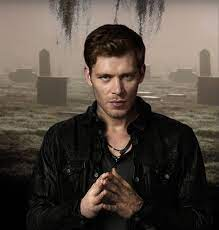
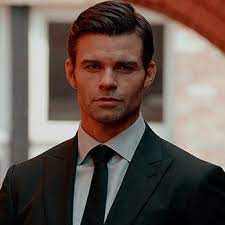
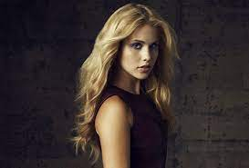
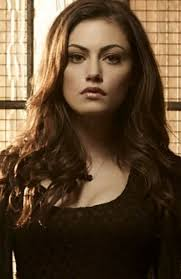
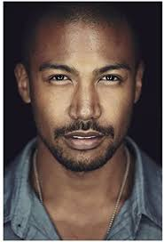
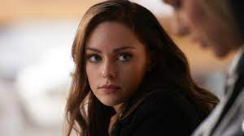
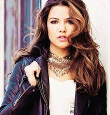

Characters in the series
Each character in The Originals has a role to play in the show but the following listed beleow are some of the main characters:
- Klaus Mikaelson
- Elijah Mikaelson
- Rebekah Mikaelson
- Hayley Marshall
- Marcel Gerard
- Hope Mikaelson
- Davina Claire
Joseph Morgan as Klaus Mikaelson: The self-proclaimed King of the French Quarter of New Orleans and the Original Hybrid: half-Original Vampire and half-werewolf. As the son of a witch and a werewolf alongside being a vampire by magic, Klaus is one of the most powerful and feared supernatural beings in history - he is over 1000 years old. He has a soft spot for his family, especially for Rebekah and Hope, his daughter with Hayley. He is the adoptive father of Marcel, his former protégé whom he saved from slavery. He eventually develops feelings for Cami. He and Elijah kill each other in the series finale to destroy the Hollow, an ancient spirit that was transferred from Hope's body to Elijah and Klaus's to protect Hope. The character is first introduced in The Vampire Diaries season 2.
Daniel Gillies as Elijah Mikaelson: An Original Vampire and Klaus's older maternal half-brother. He is shown to be extremely suave, always sporting a suit, and level-headed compared to Klaus's more heated tendencies. He is also known as the "Noble Brother". He harbours romantic affections for Hayley which she returns. In season 5 he portrays an alternate Elijah after being memory wiped at the end of season 4. He and Klaus kill each other in the series finale to destroy the Hollow, an ancient spirit that was transferred from Hope's body to Klaus's. The character is first introduced in The Vampire Diaries season 2.
Claire Holt as Rebekah Mikaelson (season 1; special guest star seasons 2-5): An Original Vampire and Klaus's younger maternal half-sister. She is Klaus's favourite and the youngest of the Mikaelson siblings after the death of Henrik. At one time, she was in a secret, forbidden romantic relationship with Marcel. Despite her unwavering love for her family, she desires to find love and start a family of her own, which is complicated by her family name and vampire status. She eventually leaves New Orleans to pursue a simpler life outside of her family. Holt departs the main cast near the end of season 1 due to wanting to spend more times with her family but guest-starred sporadically in every season since. In the season 5 premiere, Marcel proposes to her, and in the series finale, she accepts. Klaus also ensures before his death that she can get the cure to make her human so she can have children and a human life with Marcel.
Phoebe Tonkin as Hayley Marshall: Originally a werewolf, later a hybrid, who conceived a daughter with Klaus named Hope following a one night stand with Klaus in The Vampire Diaries creating the first ever tribrid - witch (from Klaus' mother) Vampire/hybrid (from Klaus) and werewolf (from Hayley and Klaus). She is revealed to be the long-lost Alpha of her werewolf bloodline. Later, she rises to become the Alpha of the entire Crescent pack when the Alphas of all the other bloodlines bow down before her. She is initially reluctant to be involved with the Mikaelsons, but is eventually accepted into the family and accepts them in return. She reciprocates Elijah's romantic feelings but marries Jackson Kenner to unite their packs despite her feelings for Elijah which runs throughout all 5 seasons. Her birth name, as revealed in season 1, is Andrea Labonair. She sacrifices herself to save Klaus and Hope in season 5 from the vampire Nazis. The character is first introduced in The Vampire Diaries season 4
Marcellus "Marcel" Gerard is Klaus' former protégé and a vampireb that he turned in the early 1800s. Marcel enforces a system of rules of his creation within the French Quarter, which all supernatural residents must abide by. He is the King of the French Quarter and of New Orleans. He will find himself at war with his best friend, Niklaus Mikaelson. Marcel will also be Sophia's love interest. He is also the surrogate father of Davina Claire and good friends with Camille O'Connell
Danielle Rose Russel as Hope Andrea Mikaelson is a main character in Legacies, and she was a former major recurring character in The Originals before being promoted to a main character in the fifth season. Hope is the tribrid daughter of Niklaus Mikaelson and Hayley Marshall-Kenner.She was named Hope by her father, who took inspiration from his half-brother Elijah's words about his newborn child being their family's hope. Her middle name is Andrea after her mother's birth-name and she takes the surname of her father's side. As a result of her unique heritage, she is the world's first werewolf-witch-vampire hybrid.With an absent father, Davina views Marcel Gerard as the "father figure" in her life following her mother's murder during the Harvest. Following her resurrection by the Hollow, she and Kol Mikaelson moved to San Francisco, California and eventually married.
Danielle Campbell as Davina Claire is a powerful witch and former main character of The Originals. She is also a former Harvest girl from the French Quarter Coven born and raised in the French Quarter of New Orleans.
